GPU Kernel 教程：最小可运行模板集¶
这份文档给整套教程补一组“最小可运行模板”。目标不是一上来追求极限性能，而是提供正确、短小、可作为起点的代码骨架。
使用建议：
- 先读对应章节，再看这里的模板；
- 先把模板跑通，再开始调参；
- 不要直接把这些模板当最终高性能实现，它们的主要价值是起点正确。
对应独立脚本：
- 第一章模板脚本：
template_ch1_vector_add.py - 第二章模板脚本：
template_ch2_rmsnorm.py - 第三章模板脚本：
template_ch3_detect_backend.py - 第四章模板脚本：
template_ch4_softmax.py - 第五章模板脚本：
template_ch5_verify_benchmark.py
模板 1：第一章最小 Triton 向量加法¶
适用章节：第一章（执行模型 / grid / mask / program 基本概念）
import torch
import triton
import triton.language as tl
@triton.jit
def add_kernel(x_ptr, y_ptr, out_ptr, n_elements, BLOCK_SIZE: tl.constexpr):
pid = tl.program_id(axis=0)
block_start = pid * BLOCK_SIZE
offsets = block_start + tl.arange(0, BLOCK_SIZE)
mask = offsets < n_elements
x = tl.load(x_ptr + offsets, mask=mask, other=0.0)
y = tl.load(y_ptr + offsets, mask=mask, other=0.0)
tl.store(out_ptr + offsets, x + y, mask=mask)
def add(x: torch.Tensor, y: torch.Tensor):
assert x.is_cuda and y.is_cuda
assert x.shape == y.shape
out = torch.empty_like(x)
n = x.numel()
grid = lambda meta: (triton.cdiv(n, meta["BLOCK_SIZE"]),)
add_kernel[grid](x, y, out, n, BLOCK_SIZE=1024)
return out
if __name__ == "__main__":
x = torch.randn(4097, device="cuda", dtype=torch.float32)
y = torch.randn(4097, device="cuda", dtype=torch.float32)
out = add(x, y)
ref = x + y
print("max diff:", (out - ref).abs().max().item())
这个模板主要用来确认你已经理解：
program_id在做什么；grid如何覆盖完整输入；- 为什么边界必须用
mask。
模板 2：第二章最小 Fused RMSNorm¶
适用章节：第二章（fusion / fp32 累加 / rsqrt）
import torch
import triton
import triton.language as tl
@triton.jit
def rmsnorm_kernel(x_ptr, w_ptr, out_ptr, hidden_dim, stride_row, eps,
BLOCK_SIZE: tl.constexpr):
row = tl.program_id(0)
cols = tl.arange(0, BLOCK_SIZE)
mask = cols < hidden_dim
x = tl.load(x_ptr + row * stride_row + cols, mask=mask, other=0.0).to(tl.float32)
w = tl.load(w_ptr + cols, mask=mask, other=0.0).to(tl.float32)
mean_sq = tl.sum(x * x, axis=0) / hidden_dim
inv_rms = tl.rsqrt(mean_sq + eps)
y = x * inv_rms * w
tl.store(out_ptr + row * stride_row + cols, y.to(tl.float16), mask=mask)
def rmsnorm(x: torch.Tensor, weight: torch.Tensor, eps: float = 1e-5):
assert x.is_cuda and weight.is_cuda
assert x.ndim == 2
rows, hidden_dim = x.shape
out = torch.empty_like(x)
block_size = triton.next_power_of_2(hidden_dim)
grid = (rows,)
rmsnorm_kernel[grid](x, weight, out, hidden_dim, x.stride(0), eps, BLOCK_SIZE=block_size)
return out
def rmsnorm_ref(x: torch.Tensor, weight: torch.Tensor, eps: float = 1e-5):
x_fp32 = x.float()
rms = torch.rsqrt(x_fp32.pow(2).mean(dim=-1, keepdim=True) + eps)
return (x_fp32 * rms * weight.float()).to(x.dtype)
if __name__ == "__main__":
x = torch.randn(128, 1024, device="cuda", dtype=torch.float16)
w = torch.randn(1024, device="cuda", dtype=torch.float16)
out = rmsnorm(x, w)
ref = rmsnorm_ref(x, w)
print("max diff:", (out - ref).abs().max().item())
这个模板主要用来确认你已经理解：
- 为什么 reduce 前要转
fp32； - 为什么
rsqrt很自然； - fusion 真正省下的是中间结果 HBM 往返。
模板 3：第三章最小架构检测脚本¶
适用章节：第三章（平台差异 / backend 判断 / 架构感知）
import torch
def detect_backend():
if not torch.cuda.is_available():
return {
"available": False,
"backend": "none",
"device_name": None,
}
backend = "rocm" if getattr(torch.version, "hip", None) else "cuda"
return {
"available": True,
"backend": backend,
"device_name": torch.cuda.get_device_name(0),
"device_count": torch.cuda.device_count(),
}
if __name__ == "__main__":
info = detect_backend()
print(info)
这个模板虽然不跑 kernel，但它很重要，因为它对应的就是第三章反复强调的点：
不要把“
torch.cuda接口存在”直接等同于“这一定是 NVIDIA CUDA 平台”。
模板 4：第四章最小 Softmax Kernel¶
适用章节：第四章（operator skill / memory-bound / safe softmax）
import torch
import triton
import triton.language as tl
@triton.jit
def softmax_kernel(out_ptr, x_ptr, n_cols, stride_row, BLOCK_SIZE: tl.constexpr):
row = tl.program_id(0)
cols = tl.arange(0, BLOCK_SIZE)
mask = cols < n_cols
x = tl.load(x_ptr + row * stride_row + cols, mask=mask, other=float("-inf")).to(tl.float32)
x = x - tl.max(x, axis=0)
num = tl.exp(x)
den = tl.sum(num, axis=0)
y = num / den
tl.store(out_ptr + row * stride_row + cols, y.to(tl.float16), mask=mask)
def softmax(x: torch.Tensor):
assert x.is_cuda and x.ndim == 2
rows, n_cols = x.shape
out = torch.empty_like(x)
block_size = triton.next_power_of_2(n_cols)
softmax_kernel[(rows,)](out, x, n_cols, x.stride(0), BLOCK_SIZE=block_size)
return out
if __name__ == "__main__":
x = torch.randn(256, 1024, device="cuda", dtype=torch.float16)
out = softmax(x)
ref = torch.softmax(x.float(), dim=-1).to(x.dtype)
print("max diff:", (out - ref).abs().max().item())
这个模板主要用来确认你已经理解：
- 为什么 safe softmax 必须减
max； - 为什么 softmax 常常是 memory-bound；
- 为什么最小可运行模板不等于最终高性能版本。
附：第四章最小 GEMM Skeleton（代码骨架版）¶
下面这段不是高性能 matmul，只是一个地址正确、stride 传参正确、launch 方式正确的最小骨架。
import torch
import triton
import triton.language as tl
@triton.jit
def gemm_skeleton(
A, B, C,
M, N, K,
stride_am, stride_ak,
stride_bk, stride_bn,
stride_cm, stride_cn,
BLOCK_M: tl.constexpr,
BLOCK_N: tl.constexpr,
BLOCK_K: tl.constexpr,
):
pid_m = tl.program_id(axis=0)
pid_n = tl.program_id(axis=1)
offs_m = pid_m * BLOCK_M + tl.arange(0, BLOCK_M)
offs_n = pid_n * BLOCK_N + tl.arange(0, BLOCK_N)
offs_k = tl.arange(0, BLOCK_K)
acc = tl.zeros((BLOCK_M, BLOCK_N), dtype=tl.float32)
for k0 in range(0, K, BLOCK_K):
a_ptrs = A + offs_m[:, None] * stride_am + (k0 + offs_k[None, :]) * stride_ak
b_ptrs = B + (k0 + offs_k[:, None]) * stride_bk + offs_n[None, :] * stride_bn
a = tl.load(
a_ptrs,
mask=(offs_m[:, None] < M) & ((k0 + offs_k[None, :]) < K),
other=0.0,
)
b = tl.load(
b_ptrs,
mask=((k0 + offs_k[:, None]) < K) & (offs_n[None, :] < N),
other=0.0,
)
acc += tl.dot(a, b)
c_ptrs = C + offs_m[:, None] * stride_cm + offs_n[None, :] * stride_cn
tl.store(c_ptrs, acc.to(tl.float16), mask=(offs_m[:, None] < M) & (offs_n[None, :] < N))
def launch_gemm_skeleton(A: torch.Tensor, B: torch.Tensor):
assert A.is_cuda and B.is_cuda
assert A.ndim == 2 and B.ndim == 2
assert A.shape[1] == B.shape[0]
M, K = A.shape
_, N = B.shape
C = torch.empty((M, N), device=A.device, dtype=torch.float16)
grid = lambda meta: (
triton.cdiv(M, meta["BLOCK_M"]),
triton.cdiv(N, meta["BLOCK_N"]),
)
gemm_skeleton[grid](
A, B, C,
M, N, K,
A.stride(0), A.stride(1),
B.stride(0), B.stride(1),
C.stride(0), C.stride(1),
BLOCK_M=64,
BLOCK_N=64,
BLOCK_K=32,
)
return C
if __name__ == "__main__":
A = torch.randn(128, 256, device="cuda", dtype=torch.float16)
B = torch.randn(256, 96, device="cuda", dtype=torch.float16)
out = launch_gemm_skeleton(A, B)
ref = torch.matmul(A, B)
print("max diff:", (out - ref).abs().max().item())
这个骨架最值得刻意确认的不是性能，而是下面 4 件事：
grid必须覆盖(M, N)两个输出维度，而不是只看 K；- host 侧的 stride 直接来自
A.stride()/B.stride()/C.stride()； - kernel 里的 A/B/C 地址方向必须分别对应
(m, k)/(k, n)/(m, n)； acc默认优先用fp32，再在写回时转回目标 dtype。
如果你想检查自己是不是真的看懂了，可以先打印：
只要你能把这些 stride 和 kernel 里的 stride_am / stride_ak / stride_bk / stride_bn / stride_cm / stride_cn 一一对上，这个最小骨架的关键就已经吃透了。
附：第四章 GEMM 图解速记卡（离线版）¶
把上面这段最小骨架和下面这组图一起看，会更容易把 pid_m / pid_n / BLOCK_M / BLOCK_N / BLOCK_K / acc 的含义真正串起来。
1）先看“输出 tile”¶
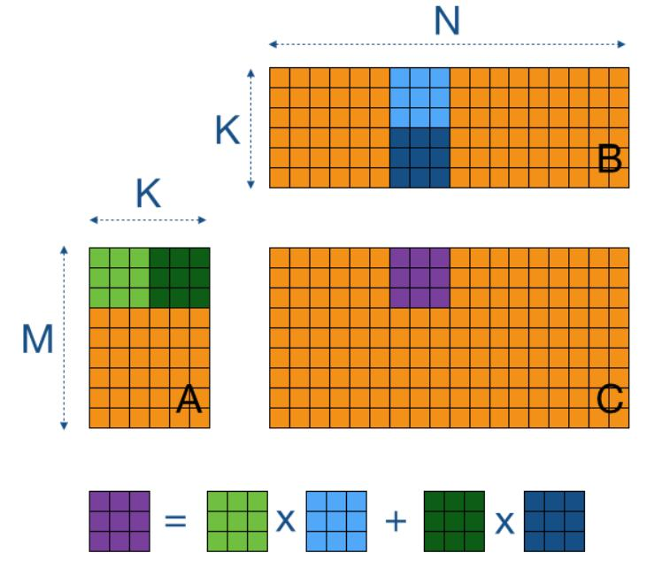
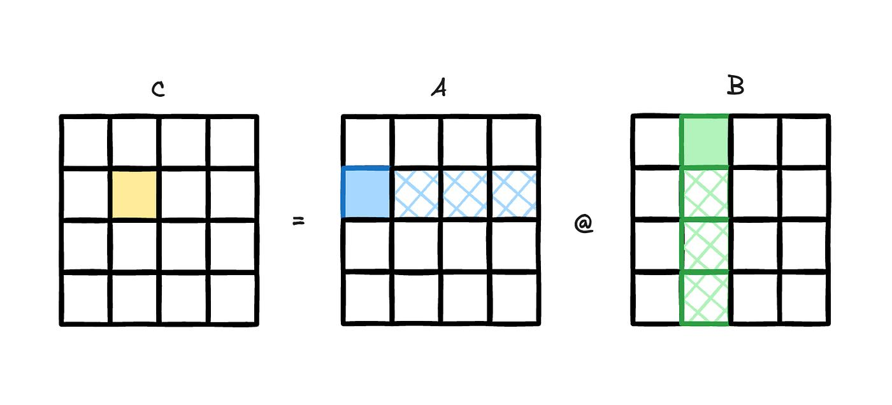
速记：
- 一个 program/block 只负责一个
C_tile； pid_m / pid_n决定这个 tile 在整张C里的位置；acc就是这个 tile 的局部累加器。
2）再看“沿 K 维分块累加”¶
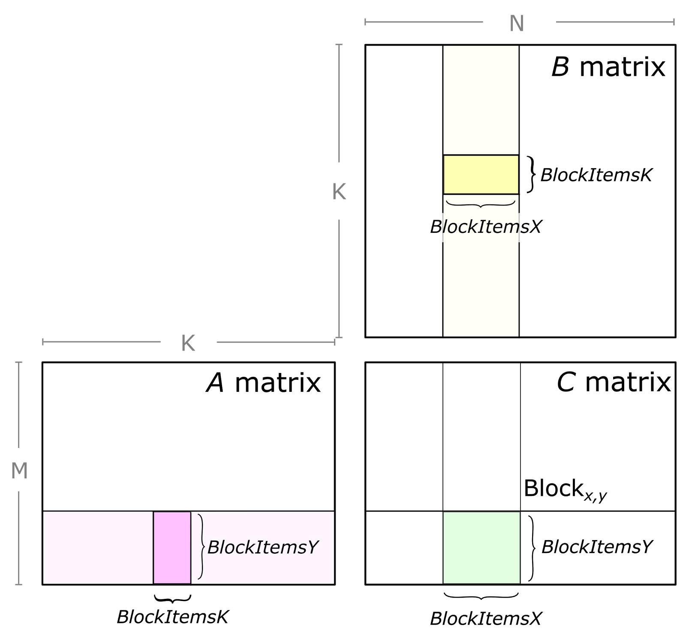
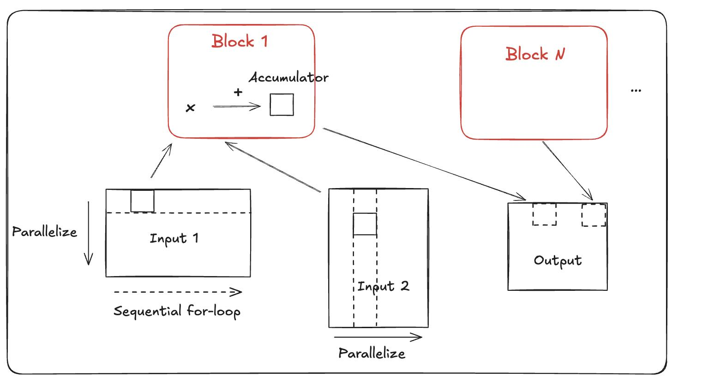
速记：
变量对照表：
| 你脑子里要有的对象 | Triton 里常见变量 |
|---|---|
| 一个输出 tile | acc |
| tile 的行索引 | pid_m, offs_m |
| tile 的列索引 | pid_n, offs_n |
| 当前 K 窗口 | k0, offs_k |
| 当前 A 子块 | a |
| 当前 B 子块 | b |
如果你已经能把这张速记卡和第四章的 gemm_skeleton 对起来，说明你对 tile GEMM 的最小心智模型已经建立起来了。
模板 5：第五章最小 Verify + Benchmark Harness¶
适用章节：第五章（verify / benchmark / optimize loop）
import time
import torch
def verify(kernel_fn, ref_fn, inputs, atol=1e-2, rtol=1e-2):
out = kernel_fn(*inputs)
ref = ref_fn(*inputs)
ok = torch.allclose(out.float(), ref.float(), atol=atol, rtol=rtol)
max_diff = (out.float() - ref.float()).abs().max().item()
return ok, max_diff
def benchmark(fn, inputs, warmup=25, iters=100):
for _ in range(warmup):
fn(*inputs)
torch.cuda.synchronize()
start = time.perf_counter()
for _ in range(iters):
fn(*inputs)
torch.cuda.synchronize()
elapsed = (time.perf_counter() - start) / iters
return elapsed * 1e6
if __name__ == "__main__":
x = torch.randn(1024, 1024, device="cuda", dtype=torch.float16)
def kernel_fn(t):
return torch.softmax(t, dim=-1)
def ref_fn(t):
return torch.softmax(t, dim=-1)
ok, max_diff = verify(kernel_fn, ref_fn, (x,))
latency_us = benchmark(kernel_fn, (x,))
print({
"verify_ok": ok,
"max_diff": max_diff,
"latency_us": latency_us,
})
这个模板主要用来确认你已经理解：
- 为什么 verify 必须在 benchmark 前；
- 为什么 benchmark 要有 warmup 和 synchronize；
- 怎么把一次实验记录成最小闭环。
使用提醒¶
这 5 个模板故意都保持“小”。
它们最重要的作用不是性能极限，而是：
- 先把接口、地址、mask、dtype、验证顺序写对；
- 让你有一个可靠起点；
- 后续再按各章节的方法迭代优化。
图解速查附录（离线版）¶
这一页前半部分给的是“最小可运行模板”，后半部分这份附录给的是“最小可复习图谱”。
适合使用场景：
- 你不想重新通读章节，只想快速回忆一个概念；
- 你在离线环境里看教程；
- 你正在写 kernel，需要快速对照变量或数据流。
0. 统一图例：先看颜色语义再翻图¶
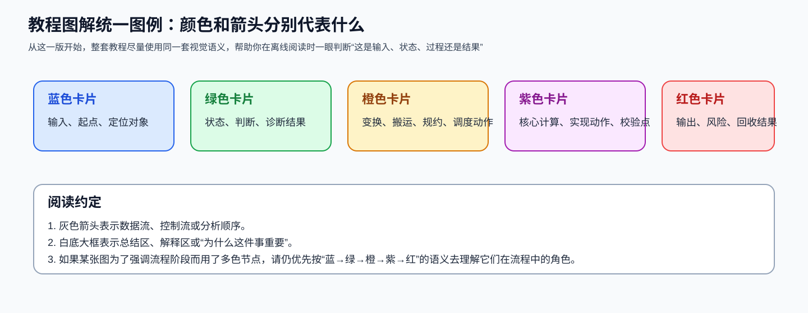
从这一版开始，教程图解尽量遵循下面这套颜色语义：
- 蓝色：输入 / 起点 / 定位对象；
- 绿色：状态 / 判断 / 诊断结果；
- 橙色：变换 / 搬运 / 规约 / 调度动作；
- 紫色：核心计算 / 实现动作 / 校验点；
- 红色：输出 / 风险 / 回收结果；
- 灰色箭头：数据流、控制流或分析顺序。
1. GEMM：tile、K 维累加、地址表达¶
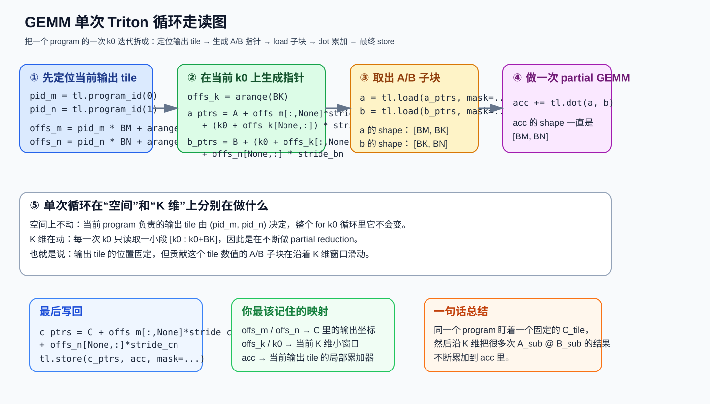
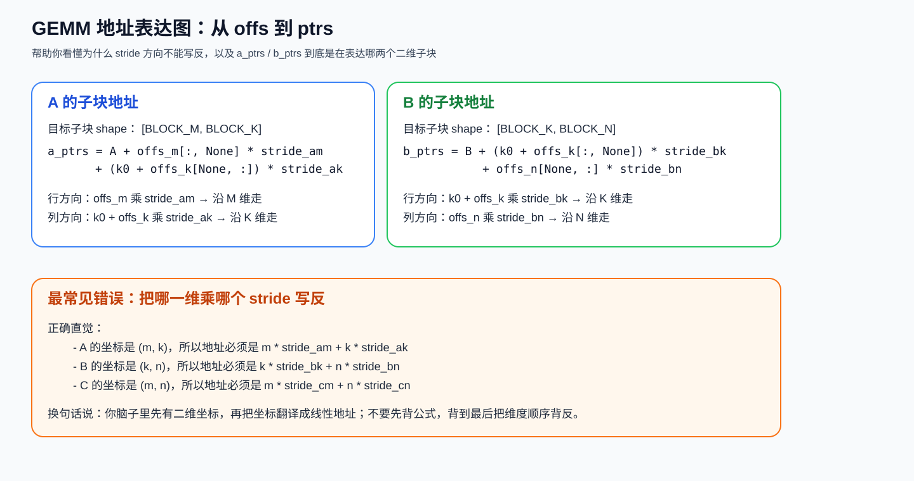
速记：
- 先固定输出 tile，再看当前 K 窗口；
acc始终对应一个固定的C_tile；- A/B/C 的 stride 必须分别对应
(m,k) / (k,n) / (m,n)。
2. Flash-Attention：结构与在线 softmax¶
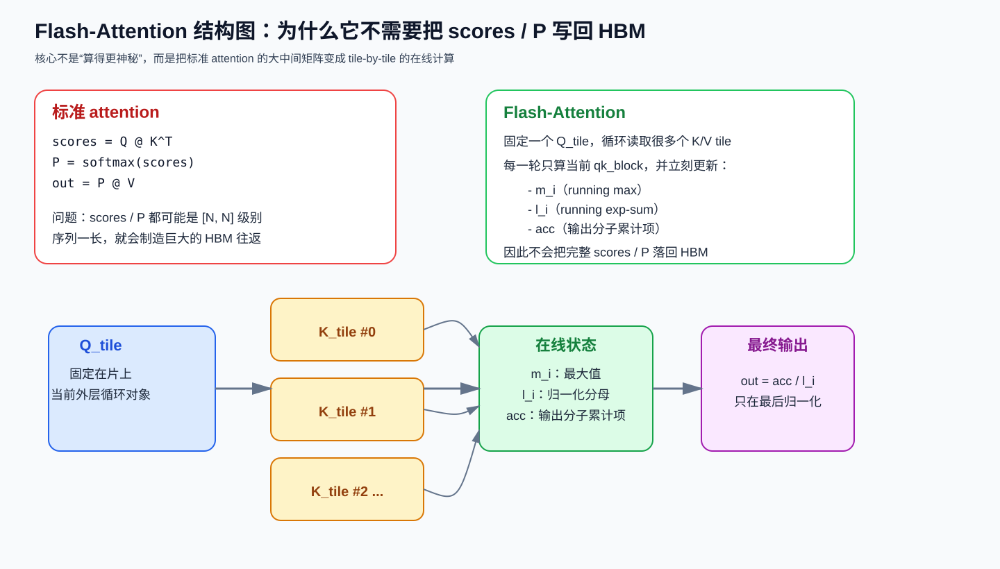
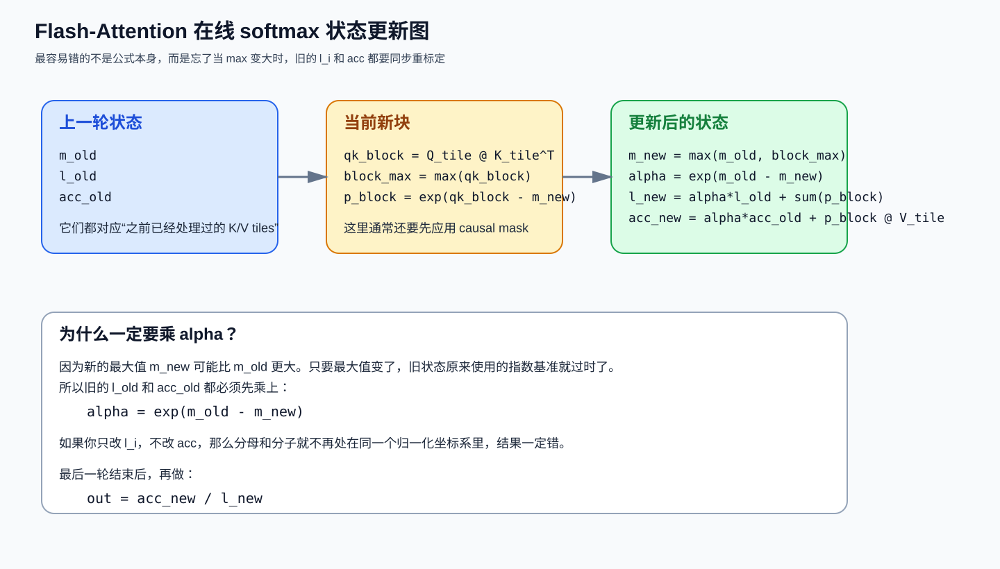
速记：
- 不写完整
scores / P到 HBM； - 内层循环持续更新
m_i / l_i / acc； max变了以后，l_i和acc都要一起重标定。
3. Softmax / RMSNorm：两类经典 memory-bound 练习题¶
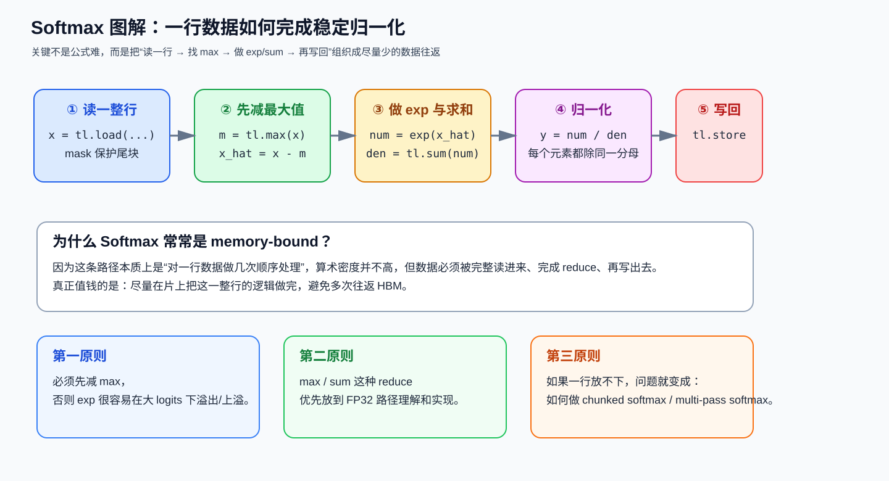
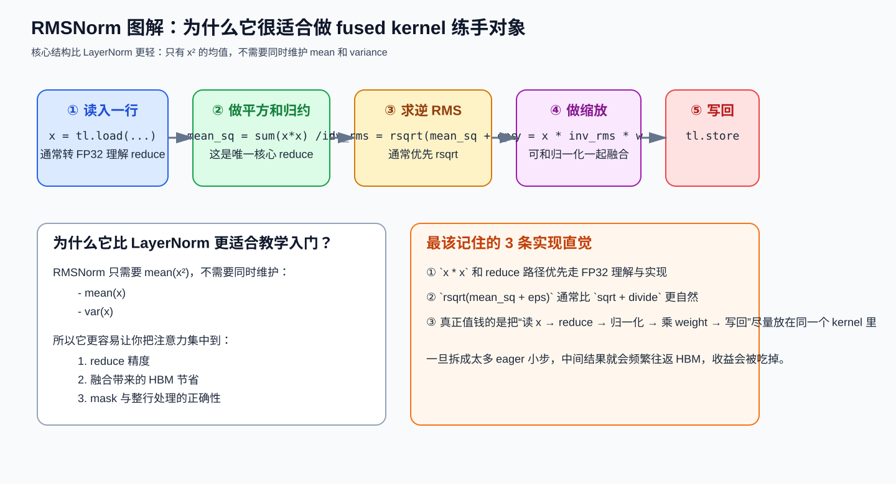
速记：
- Softmax：一整行是自然处理单位；
- RMSNorm：一个 reduce + 一次归一化 + 一次缩放；
- 两者真正值钱的都不是公式本身，而是减少中间结果往返。
4. Cross-Entropy / RoPE / MoE / FFN：常见“看起来简单，实则容易错”的地方¶
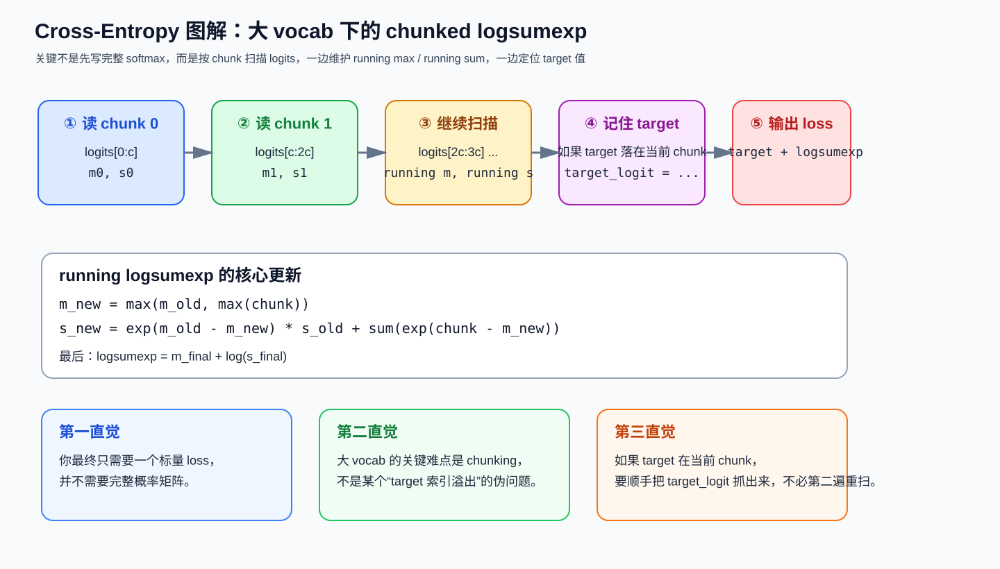
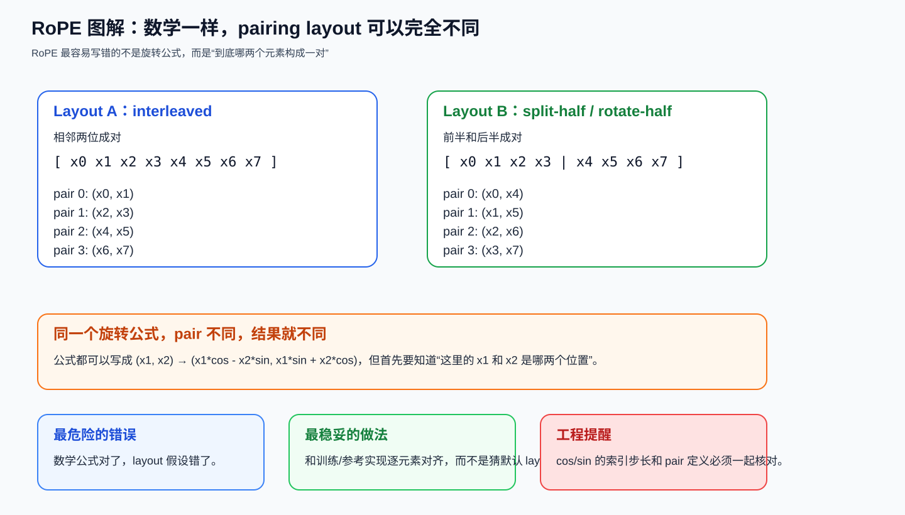
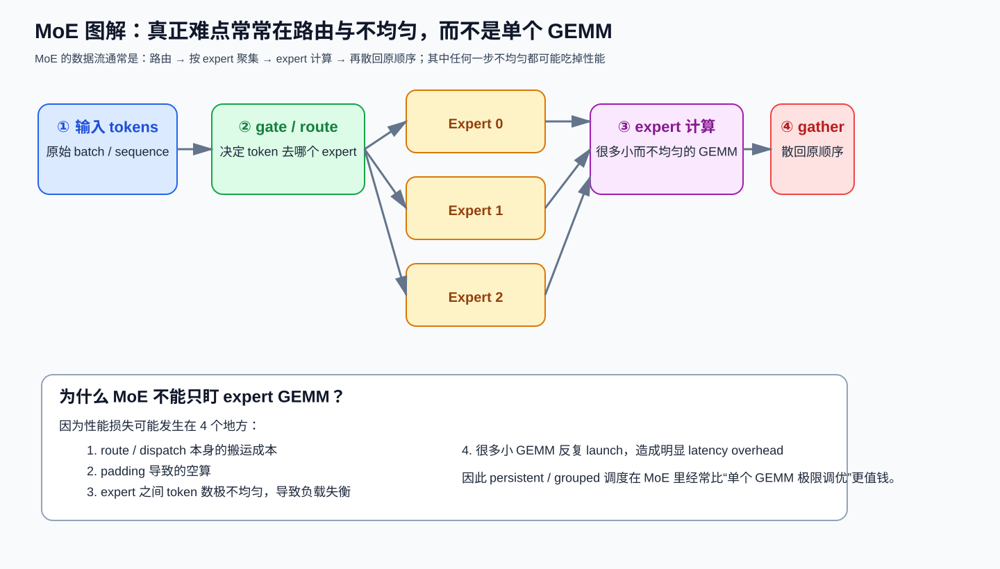
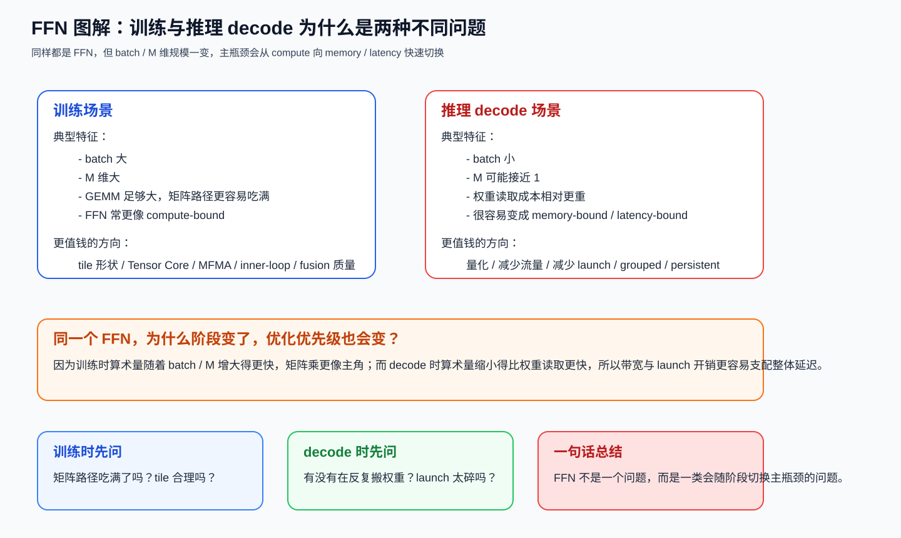
速记：
- Cross-Entropy：大 vocab 的关键是 chunked logsumexp；
- RoPE：最危险的是 pairing layout 假设错；
- MoE：不要只盯 expert GEMM；
- FFN：训练和 decode 往往不是同一种瓶颈结构。
5. 系统工作流：优化闭环¶

速记：
- 先 profile，再 diagnose；
- 先 verify，再 benchmark；
- 这是闭环，不是单向打卡流程。